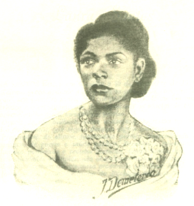
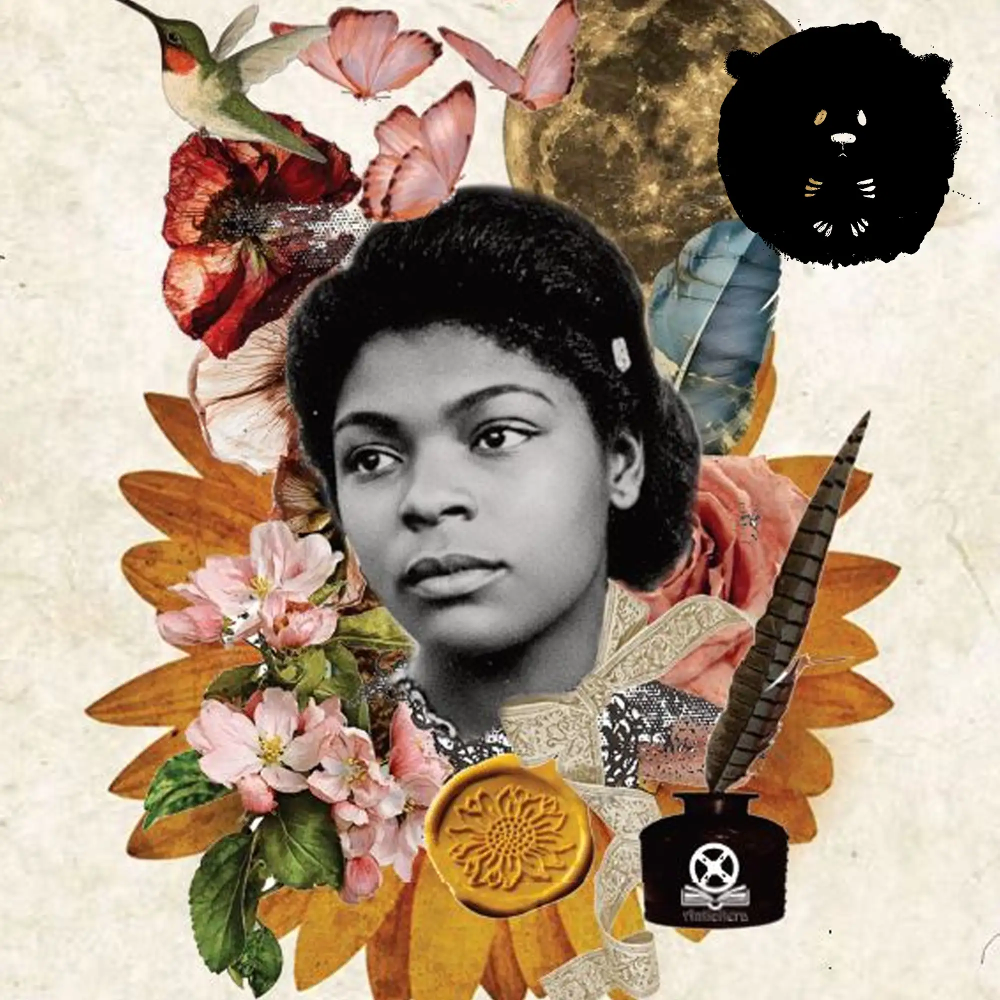

Laura Santos

Biografia
Laura Santos (1919-1981) nasceu em Curitiba, no Paraná, foi poeta simbolista negra, professora, fez magistério, lecionando aulas de Português e Matemática, cursou enfermagem e se formou em saúde pública, se tornando educadora sanitária, possuindo atuação importante na educação curitibana. Seu ponto de partida na literatura foi em 1937, ainda jovem quando recebeu um prêmio em um concurso realizado pela Base Aérea com o trabalho “História da evolução da aviação”. A autora teve seus textos publicados nos jornais Gazeta do Povo e no Diário da Tarde até a década de 1980. Em 1939, foi uma das fundadoras da Academia de Letras José de Alencar.
Entre suas publicações estão “Sangue tropical”, “Poemas da noite”, e “Desejo”, todas de 1953, posteriormente reunidos e publicados pela Secretaria de Estado da Cultura do Paraná (Seec), intitulado “Poemas”, em 1990. O resgate da literatura de Laura é feito na obra “Sangue Tropical e outros poemas – Laura Santos”, que reúne pela primeira vez toda a produção da escritora, incluindo poemas, textos em prosa e documentos. Além dos seus três livros, foram acrescentados 14 poemas e quatro textos em prosa inéditos, ampliando o acesso à produção literária da escritora e contribuindo para o resgate de uma trajetória marcada pelo silenciamento imposto pela época.
Principais Obras

Sangue Tropical e outros poemas – Laura Santos(2026)
Características literárias
Conhecida como “Pérola Negra”, Laura desenvolveu uma literatura influenciada pela estética parnaso-simbolista, principalmente por Olavo Bilac. Santos aborda temas como amor, desejo, erotismo, usando o corpo como objeto de linguagem, utilizando diversas formas de expressão, como versos livres e sonetos.
Premiações
- Sangue tropical (Prêmio Academia José de Alencar) - 1953.
- “História da evolução da aviação” - 1937, concurso literário local da Base Aérea.
Complemento
Caso queira saber mais sobre a autora e suas obras, consulte fontes bibliográficas confiáveis e vídeos sobre a escritora.
Referências
As informações apresentadas foram retiradas de sites e trabalhos acadêmicos relacionados à autora
Sites
ADEPAR. 10 anos do Estatuto da Igualdade Racial – 3ª homenagem. Disponível em: https://adepar.com.br/noticias/10-anos-do-estatuto-da-igualdade-racial-3a-homenagem/.
ANTICÍTERA. Sangue Tropical e outros poemas – Laura Santos. Disponível em: https://anticitera.com.br/produto/sangue-tropical-e-outros-poemas/.
BIBLIOTECA PÚBLICA DO PARANÁ. Laura Santos e a arte do incontrolável desejo. Disponível em: https://www.bpp.pr.gov.br/Candido/Pagina/Laura-Santos-e-arte-do-incontrolavel-desejo.
PREFEITURA DE CURITIBA. Conheça a história de quatro mulheres negras curitibanas com trajetórias na arte e na educação. Disponível em: https://www.curitiba.pr.gov.br/noticias/conheca-a-historia-de-quatro-mulheres-negras-curitibanas-com-trajetorias-na-arte-e-na-educacao/80524.
UNIVERSIDADE ESTADUAL DE MARINGÁ. Laura Santos – Dados biográficos. CEDOC-LAFEP. Disponível em: https://pcs.uem.br/cedoc-lafep/indice-de-escritoras/l/laura-santos.